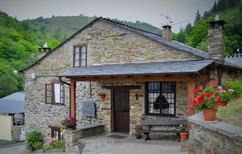
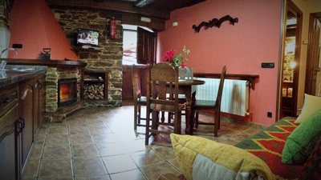
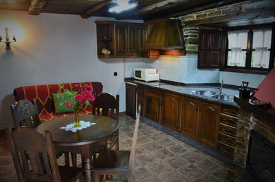
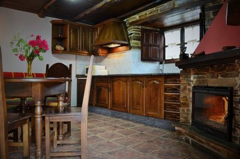
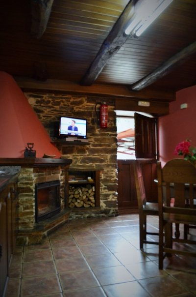
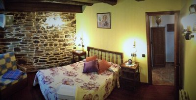
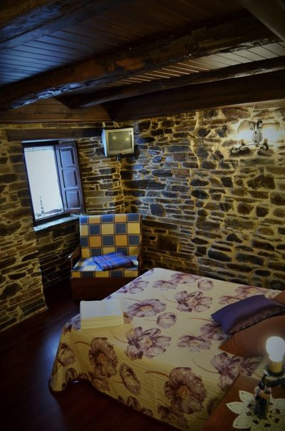
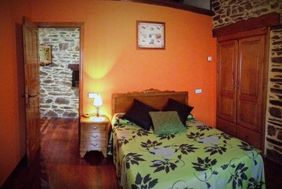
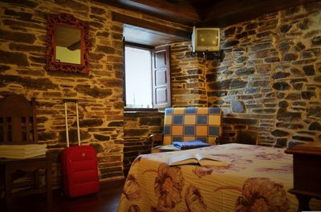
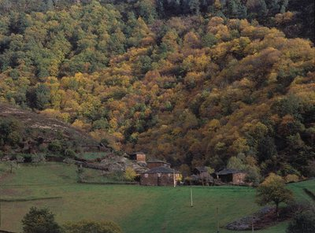

Freixe I
De dos plantas y con entrada propia: abajo la cocina-salón con la chimenea; arriba, el dormitorio de matrimonio, bajo las vigas.
- Plazas
- 2
- Plantas
- Dos plantas
- Chimenea de leña
- En la cocina-salón
- La noche
- 65 o 70 € + IVA*
Dos apartamentos rurales de piedra y pizarra en Barcia, Santa Eulalia de Oscos. Reserva de la Biosfera de Oscos-Eo.
Freixe es fresno: el árbol que hace de punto de la i.
Una casa tradicional asturiana, de piedra, restaurada en dos apartamentos independientes. Es de una familia ganadera de Barcia, abre todo el año y admite animales.
Freixe es fresno. Es el árbol que hace de punto de la i en su rótulo, y aquí sale como está hoy en Barcia: en su estación.

Dos apartamentos independientes, cada uno con su puerta, su chimenea y su cocina. Para dos personas; uno de los dos admite una cama supletoria.
De dos plantas y con entrada propia: abajo la cocina-salón con la chimenea; arriba, el dormitorio de matrimonio, bajo las vigas.
Con entrada propia, de piedra y madera: cocina-salón con chimenea de leña y el dormitorio de matrimonio con la pared de piedra a la vista.
* Precio por apartamento y noche de su web (2014): 65 € en temporada baja y 70 € en alta, IVA (10 %) aparte. Tarifa vigente por confirmar. Qué fotos son de cada apartamento sale de su web: por confirmar con la casa.
| Dato | Freixe I | Freixe II |
|---|---|---|
| Plazas | 2 | 3 (con supletoria) |
| Plantas | Dos plantas | Por confirmar |
| Dormitorio | De matrimonio | De matrimonio |
| Chimenea de leña | Sí | Sí |
| Baño completo | Sí | Sí |
| Entrada | Independiente | Independiente |
| Noche en temporada baja | 65 € + IVA | 65 € + IVA |
| Noche en temporada alta | 70 € + IVA | 70 € + IVA |
Supletoria en Freixe II, plantas de Freixe II y tarifa vigente: por confirmar con la casa.
Fotos de su web (2014), a su tamaño real como mucho y con una corrección de color suave y común. Pendiente: pedir las originales.
La pieza donde se hace la vida: cocina equipada, mesa y la chimenea de leña.




Habitación de matrimonio con la piedra a la vista; la supletoria cabe en uno de los dos.




Un baño completo en cada apartamento.
Escalera de madera entre muros de pizarra, y lo que guarda la casa.
Piedra, tejado de pizarra y el porche de madera, en el camino de la aldea.
Lo cuentan quienes han estado: al llegar suele haber algo de la casa. Depende de la época y de lo que dé el huerto; qué hay ahora, por confirmar con ellas.
«nos regaló una cesta de huevos frescos de sus gallinas»
Cristina, en EscapadaRural, febrero de 2018
«nos regalo huevos frescos de sus gallinas y una miel deliciosa»
Ana, en EscapadaRural, enero de 2017
«nos diron rosquillas, verduras del huerto y mucha hospitabilidad»
Vera, en EscapadaRural, mayo de 2019
«también leña para la chimenea y la barbacoa»
Cristina, en EscapadaRural, febrero de 2018
Citas literales de sus opiniones en EscapadaRural, tal cual las escribieron.
De la casa al río Barcia y, valle arriba, a Santa Eulalia y las aldeas: el relieve y la ortofoto del IGN, las rutas que salen de aquí y el sol y la luna de ahora.

Barcia está en el valle del río Barcia, en el concejo de Santa Eulalia de Oscos. Desde la puerta sale la ruta de Os Cortíos, y valle arriba quedan Santa Eulalia y las aldeas de alrededor.
Aquí se carga el valle en 3D, con el relieve y la ortofoto del Instituto Geográfico Nacional. En el móvil, con un botón.
Elige un sitio de la lista: el mapa va hasta él y dibuja el camino desde la casa, con los kilómetros y los minutos.
Santalla, la capital del concejo · por AS-27 · a pie, 4,1 km y 55 min
museo en Ferreirela de Baxo · por AS-27 · a pie, 5,8 km y 1 h 17 min
mazo y ferrería · por AS-27 · a pie, 7,2 km y 1 h 36 min
área recreativa junto al Agüeira · por AS-27
sendero de 3,3 km con trazado en OpenStreetMap, de 493 a 609 m · por AS-27, SE-2 · a pie, 4,5 km y 1 h · la salida, en el área recreativa de Pumares
sendero de 12,7 km con trazado en OpenStreetMap, de 394 a 672 m · por AS-27 · a pie, 4,1 km y 55 min · la salida, en Santa Eulalia
Os Cortíos (sale de la puerta), el Forcón de los Ríos, las Carballeiras y A Coba no tienen trazado en OpenStreetMap: aquí no se dibujan. En la casa saben por dónde van.
iglesia del monasterio de Santa María · por AS-27, AS-33
Samartín · por AS-27, AS-33, AS-362
por AS-27, AS-11, AS-26, AS-21
por AS-27, LU-703, LU-701
A Veiga · por AS-27, AS-11
por AS-27, AS-11, N-640, N-642, LU-140
Praia das Catedrais, el acceso · por AS-27, AS-11, N-640, N-642, N-634, LU-P-0610
la terminal · por AS-27, AS-11, N-640, A-8, AI-82
Distancias y tiempos desde la puerta de Casa Freixe con OSRM (coche) y routing.openstreetmap.de (a pie), con datos de © colaboradores de OpenStreetMap (ODbL), calculados el 26/11/2026. Son tiempos teóricos, sin tráfico ni paradas. Relieve y desnivel: MDT05 y MDT25 © IGN (CC BY 4.0).
Es la nota que le dan quienes han opinado en EscapadaRural.
Leer las opiniones en EscapadaRural (se abre en otra pestaña)
«El lugar es una aldea de cuento, con cuatro vecinos entrañables.»
Macarena, en familia, septiembre de 2018
«La casa es muy cómoda, bonita y bien equipada, construida en piedra y pizarra, materiales característicos de la zona.»
Cristina, en pareja, febrero de 2018
«El entorno es precioso, ideal para disfrutar de la naturaleza y del silencio.»
Samuel, en pareja, agosto de 2021
Prueba fechas y mira el precio de cada noche. Cuando lo tengas, se prepara la solicitud para la casa: ellos te confirman.
Para reservar, llama al 985 621 215 o al móvil 669 924 374, o escribe a info@casafreixe.com.
Temporada alta: julio, agosto, semana santa y puentes. Baja: el resto del año.
Casa Freixe
Barcia, 33776 Santa Eulalia de Oscos
Asturias
Las distancias en coche y a pie, desde la puerta, están en Alrededor.